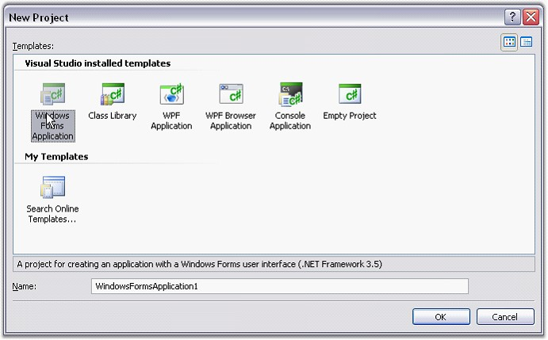
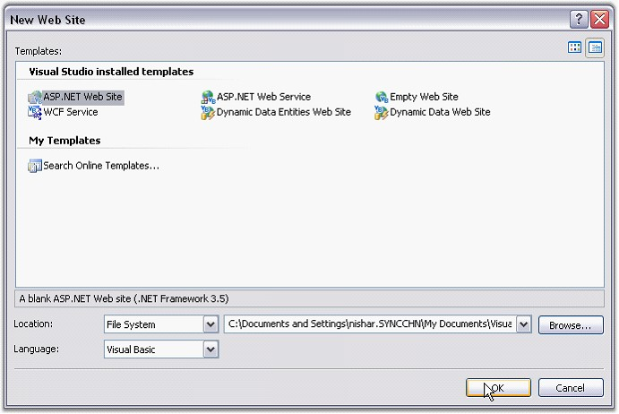
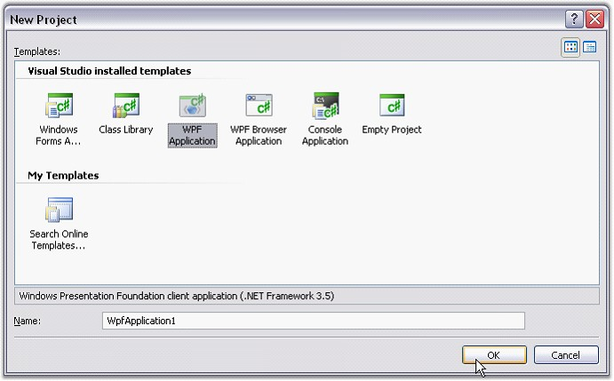

This section illustrates the step-by-step procedure to create the following platform applications.
Windows Application
1. Open Microsoft Visual Studio. Go to File menu and click New Project. In the New Project dialog box, select Windows Forms Application template, name the project and click OK.

Figure 10: New Project Dialog Box
A windows application is created.
2. Open the main form of the application in the designer.
3. Add the Syncfusion controls to your VS.NET toolbox if you haven't done so already [This is done automatically when you install Essential Studio].
4. Now you need to deploy Essential Calculate into this Windows application. Refer Windows topic for detailed information.
Web Application
1. Open Microsoft Visual Studio. Go to File menu and click New Website. In the New Website dialog box, select ASP.NET Web Site template, name the website and click OK.

Figure 11: New Web Site Dialog Box
A Web application is created.
2. Now you need to deploy Essential Calculate into this ASP.NET application. Refer ASP.NET topic for detailed information.
WPF Application
1. Open Microsoft Visual Studio. Go to File menu and click New Project. In the New Project dialog box, select WPF Application template, name the project and click OK.

Figure 12: New Project Dialog Box
A new WPF application is created.
2. Open the main form of the application in the designer.
3. Add the Syncfusion controls to your VS.NET toolbox if you haven't done so already [This is done automatically when you install Essential Studio].
4. Now you need to deploy Essential Calculate into this WPF application. Refer WPF topic for detailed information.
For more information refer the following topic.